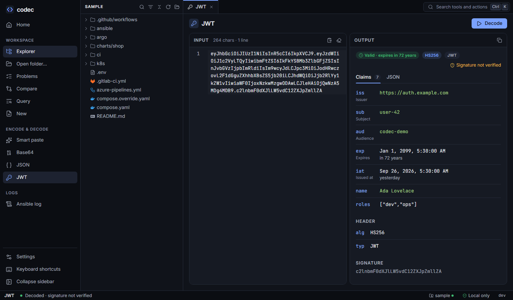

Everyday tools
The tools for the text you handle all day: smart paste, base64, JSON, JWT and Ansible logs, and under Utilities URL and hex encoding, hashes, secrets, htpasswd lines, timestamps, cron schedules and regular expressions. They work without an open folder, and nothing you paste is stored or sent anywhere.

Smart paste#
Paste anything. codec detects JSON, base64, a JWT or an Ansible log and does the obvious thing: pretty-prints JSON, decodes base64 (and pretty-prints it if the result is JSON), decodes a token, analyses a log. An epoch timestamp, URL-encoded text or a cron expression is read too, with a button to open it in Timestamp, URL or Cron. The status bar says what it detected.
Base64#
- Encode or decode, standard or URL-safe alphabet.
- Decoding tolerates missing padding and whitespace — handy for values copied out of Kubernetes Secrets.
- Decoded JSON is pretty-printed.
- Swap (Alt S) moves the output to the input and flips encode/decode.
JSON#
Pretty-print, minify, or validate. Errors give the exact line and column and the editor jumps there.
JWT#
Decodes the header and claims, shows registered claims with their meaning (iss issuer, exp expires…), times as dates with "in 3 hours" or "expired yesterday", and a validity badge. The signature is not verified — codec has no keys — and says so.
Ansible log#
Paste a whole log from a pipeline, or drop or open a log file (up to 64 MB). CI timestamps (GitLab, GitHub, Azure DevOps), wrapper prefixes (Packer, Compose), colour codes, shell output and several playbook runs in one log are all fine; codec learns wrapper prefixes from the log instead of knowing them in advance. It shows:
- a summary: runs, hosts, tasks, duration, counts from the recap, and a verdict when the outcome isn't Ansible's alone ("Ansible succeeded; the output after it mentions errors", "stopped before its recap");
- an outline of runs, plays and tasks with their status and duration, and the other output between them (CI steps, shell commands) as blocks with their error count. Filter by Failed, Changed, Skipped or All, pick a host, or search; arrow keys move through it. The first failure is selected when a log opens;
- for the selected task, each host's result: failures a
rescuecaught andignore_errorsfailures are told apart from real ones, as are unreachable hosts, retries, loop items andno_logoutput. Each result opens in the single-task view: probable cause, key fields,stdout/stderrwith errors highlighted, and with a folder open Defined in (see Ansible); - for a run, its PLAY RECAP as a table, and its warnings.
Durations come from a timer callback (profile_tasks) when the run used one, otherwise from the CI timestamps. One task with one result — the TASK line, its task path and the result, even copied out of a Packer or Compose log — opens straight in the single-task view, as does a result line on its own. What you paste stays in the box; a file shows as a card instead. Alt C copies the outcome and the failures as text. On the command line: codec ansible log (see CLI).
Encode & hash#
Under Utilities in the sidebar. Five tabs; Home and the command palette list each one by name, and the tool reopens on the tab you used last.
- URL — decode or encode percent-encoding. Encoding takes a single value (everything but letters, digits and
-_.~is escaped) or, with Whole URL, keeps a URL's: / ? # & =and existing%XX. + is a space for HTML form encoding. A URL is also shown as its parts and its query parameters as a table, repeats included; a password in the URL is never shown there. - Hex — hex to text and back. Decoding accepts spaces, colons,
0xand\x; bytes that aren't text show as\xNN. Encoding can put a space or colon between bytes, in upper case. - Hash — SHA-256, SHA-384, SHA-512, SHA-1 and MD5 of the exact text (spaces and line breaks count), in hex or base64. MD5 and SHA-1 are marked checksums only. HMAC takes a key. Paste a digest into Expected to see which one matches.
- Secrets & UUID — random secrets by length and character set (symbols leave out quotes, backslash, backtick and space, so a secret pastes into YAML or a shell as is), or random bytes as hex or base64, with their strength in bits; or version 4 UUIDs. Up to 100 at a time.
- htpasswd — a bcrypt
user:$2y$…line for nginx ingress or Traefik basic auth, with thekubectlcommand to store it; Check tests a password against a line. The dice button suggests a strong password.
Everything is computed on this machine from the operating system's secure random source where randomness is needed; nothing is stored. On the command line: codec url, hex, hash, secret, uuid and htpasswd (see CLI).
Time#
Under Utilities, with two tabs. Each tab has its own time zone (type to pick one); Timestamp starts in this machine's zone, Cron in UTC, as GitHub Actions and Azure Pipelines run schedules.
- Timestamp — paste an epoch number or a date. The unit of a number is told by its size: up to 11 digits are seconds, then milliseconds, microseconds and nanoseconds. Dates are read in the usual layouts (ISO 8601, HTTP and email dates, access logs); one without a zone is read in the chosen zone. The answer shows Unix seconds and milliseconds, UTC, the chosen zone with its offset, a readable form, how long ago or how soon, the HTTP date and the ISO week, each with a copy button. Now fills in the current Unix timestamp.
- Cron — type an expression, pick a preset, or build one: every N minutes, hourly, daily, weekly on chosen days, or monthly. The schedule shows in plain words ("Every 15 minutes, from 02:00 to 06:59, Monday to Friday"), field by field, with the next 10 runs. A typed expression fills the form when it fits. Standard 5-field cron,
@daily-style shortcuts and aCRON_TZ=prefix are read; when both day fields are set, a day matching either runs, as in Kubernetes. A run that a daylight-saving change skips is named. Quartz (seconds,?,L,W,#) and Jenkins (H) expressions are recognised and named as unsupported.
On the command line: codec time and codec cron (see CLI).
Regex#
Under Utilities: a tester and an explainer on one screen. Type a pattern and some test text; matches light up in the text as you type.
- Style: Go (RE2), Go's own regular expressions, which run in linear time but have no lookarounds or backreferences; or Python / .NET / JS, with lookahead and lookbehind, backreferences, atomic groups and Python's
(?P<name>…). A test in that style stops after 2 seconds if the pattern backtracks badly, and says so. When RE2 refuses a pattern the other style takes, the error says so and Switch changes style. - Flags as toggles:
iignore case,m^and$at line breaks (on by default),s.matches line breaks,xignore whitespace (Python / .NET / JS). All matches off finds only the first. - Matches: each match with its line and capture groups, numbered and named; click one to select it in the text, hover a group to light up what it captured in every match. Up to 1000 matches.
- Explanation: the pattern part by part in plain words ("One or more times, as few as possible (lazy)", "Group 1, named "year""). Hover a part to find it in the pattern, and a group to see what it matched.
- Replace: type a replacement under the pattern (
$1,${name},$0; Python's\1and\g<name>work too;$$is a dollar sign, and a group the pattern doesn't have stays as written) and see the result. - Group numbers: in Go's style groups are numbered in order. The Python / .NET / JS style numbers them as .NET does — named groups after the unnamed ones — so refer to a named group by its name there.
On the command line: codec regex (see CLI).
Keyboard#
| Keys | Action |
|---|---|
| Ctrl Enter | Run the transform (they also run as you type) |
| Alt C | Copy the output |
| Alt S | Use the output as input |
| Esc | Clear input and output |
From the command line#
Input comes from an argument or from standard input.
codec auto '{"name":"codec"}' # detect and transform
kubectl get secret db -o jsonpath='{.data.password}' | codec b64 decode
codec b64 encode 'any text at all' # --url for the URL-safe alphabet
codec json pretty '{"a":{"b":1}}' # --indent to customise; json min, json validate
codec json validate '{"a":}' # exit 1 and "line 1, column 6"
codec jwt decode "$TOKEN" # does NOT verify the signature
codec auto < failed-task.log # Ansible -vv analysis
codec watch # transform recognisable clipboard content in place-c on any command also copies the output to the clipboard. Windows PowerShell 5.1 strips inner double quotes from native arguments; pipe instead ('{"a":1}' | .\codec.exe auto) or use PowerShell 7.